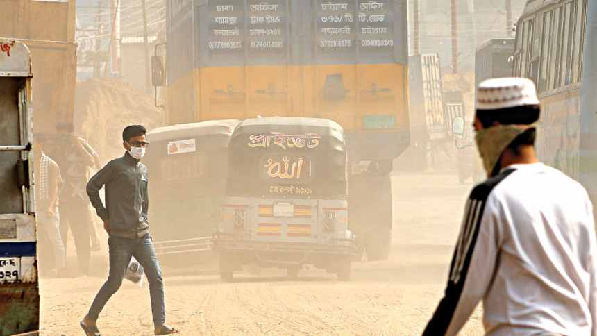

Saturday, December 14, 2024

Bangladesh
Pneumonia cases shoot up
shishu Hospital data shows; experts blame air pollution
A haze of dust hangs over DN Road in the capital’s
Shyampur. Pedestrians shield their faces with masks as they navigate the polluted air, a byproduct of ongoing
construction and heavy traffic. The photo was taken yesterday. Photo: Prabir Das
Three-year-old Anisha Anju was struggling to breathe in the pneumonia ward of Dhaka Shishu Hospital and Institute
With a severe breathing issue, she was taken to the hospital on November 26 from her home in Narsingdi's Belabo. But her condition
kept deteriorating and she had to be shifted to the ICU. After being in the ICU for three days, she was moved to the
ward five days ago.
For all latest news, follow The Daily Star's Google News channel.
"But her [Anisha's] progress has been slow since then," said her mother Shahinur Akhter, staring blankly at her child with an oxygen tube
in her nose.
"My daughter has had breathing problems since childhood. Her condition worsens every winter, and this time we brought her here as it got worse. The doctors haven't been able to say how long she'll need to stay," the
mother said while talking to The Daily Star on Thursday.
The pneumonia ward, with 19 beds, is now full while the hospital has been witnessing a surge in pneumonia cases since the onset of winter. Its officials said 1,200 patients were given outdoor healthcare on Thursday.
Read more
Cigarette city: Breathing in Dhaka’s signature cocktail
Physicians said air pollution is one of the main contributing factors behind cold-related diseases, especially pneumonia.
Prof Mahbubul Hoque, director of Bangladesh Shishu Hospital and Institute, said the hospital has been receiving an increasing number of child patients infected with cold-related viral diseases every day.
.gif)
"Children under the age of five are particularly vulnerable to these illnesses," he explained, adding that cold weather combined with polluted air was also leading to a rise in allergy-related problems.
A WHO study showed that about one-third of pneumonia deaths are due to air pollution.
In the first 11 days of this month, 74 children with pneumonia were admitted to the 681-bed hospital. The number of such patients was 227 last month. In October and September, some 292 and 378 children were hospitalised respectively, according to the hospital data.
Until Thursday, 4,118 children were admitted to the hospital with pneumonia this year. The number was 3,511 last year and 3,103 in 2022.
So far, 19 people have died of cold-related diseases and 85,469 others have taken treatment between November 15 and December 8 across the country, according to the Management Information System of Directorate General of Health Services.
Nabila Akand, assistant professor of Shishu Hospital, said air pollution is one of the main causes of pneumonia. Children's respiratory systems are less developed than other age groups. Children are mostly affected by viruses and bacteria from the air.
"Air pollution is linked to many respiratory complications, including asthma and pneumonia. Curbing it would reduce the number of children suffering from such complications," she told this newspaper.
In another incident, six-year-old Bibi Fatema has been undergoing treatment in the pneumonia ward for 29 days. Her mother, Maymuna Akter, shared, "My daughter has never experienced such severe breathing issues before. In winter, she would usually catch a cold, but this time, her condition has worsened significantly."
She said there are many shoe and garment factories in their area of Narsingdi's Madhabdi, adding, "The doctors said this might be the reason behind my daughter's acute breathing difficulties."
Prof Mahbubul estimated that the number of pneumonia patients at Shishu Hospital increased by 10 percent compared to normal times.
Around the world, pneumonia remains among the top five infectious diseases to kill children under five, accounting for 14 percent of 0.7 million deaths from infectious diseases, icddr,b data showed.
According to the icddr,b, approximately 2-3 children die every hour from pneumonia in the country. At least 24,000 die every year.
On Thursday, a large number of children and their parents were waiting in lines to see doctors at the outdoor department of the Shishu Hospital.
Talking to this correspondent, Sultana Akhter, a resident of Rampura area, who had been in a line for over two hours with her nine-month-old baby, said, "My girl has been suffering from fever and cough for the past three days. I cannot even breastfeed her due to cough."
The scenes were grim at the Pneumonia Research Centre of the hospital as all 16 critical care beds were occupied.
SYMPTOMS, PRECAUTIONS
Physicians advised guardians to keep a lookout for symptoms -- medium or high fever, cough, and laboured or fast breathing -- and rush them to hospitals as soon as these signs are visible.
They suggested taking up a balanced diet, enriched in vitamin D; wearing masks and comfortable warm clothes; and exercising regularly to help prevent contracting cold-related diseases.
Dr Nabila urged guardians to protect children from exposure to cold and polluted air. "If necessary, children should wear masks and receive extra care."
"The level of air pollution is currently very high. During winter, humidity decreases, dust level rises, and construction activities further deteriorate air quality."
She said for those with allergies, this situation worsens as sneezing and other allergic reactions increase. Along with the dust, the spread of viruses also intensifies, resulting in a rise in patient numbers.
Related topic:
pneumonia
air pollution
child Pneumonia patients
health crisis